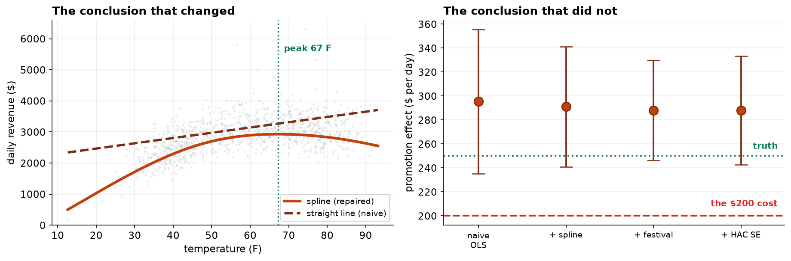

The previous chapter's diagnostics all passed, and that was worth four lines to verify. This one is the other case: four assumptions fail, and finding them depends entirely on the order you look.
- Setting
- Three years of daily trading at one cafe: 1,079 usable days with revenue, outdoor temperature, day of week, a discount promotion, public holidays and the six days of the local street festival.
- The question
- The promotion costs 200 dollars a day to run. Does it bring in more than that?
- Why it matters
- The answer is an interval, and the decision turns on whether that interval clears 200. A model that is confidently wrong about its own precision will answer this question with more certainty than the data support.
- What we do
- Fit the model anyone would fit first, run the four standard checks and find that three of them fire, repair each failure in the order that makes the next one visible, and finish by stating which of the model's two conclusions the repairs actually changed.
Run all four checks on the naive model and the variance test passes at p = 0.33. It is wrong. After the mean structure is repaired and six festival days are modeled, the same test returns p = 7×10⁻¹⁸. Nothing about the variance changed in between. And of the model's two conclusions, one survived the repairs untouched and the other had the wrong sign across half the temperature range.
The Model Everyone Fits First
Daily revenue on day of week, temperature, the promotion, public holidays and a linear time trend. After removing a duplicated export, five days with no till close-out and eleven temperature sentinels of −99, there are 1,079 days.
If the analysis stopped here, marketing would get its answer and the answer would even be approximately correct. Everything that follows is about whether we are entitled to that interval, and about a second conclusion sitting in the same output that is not approximately correct at all.
Four Checks at Once, Which Is the Wrong Way
| Assumption | Test | Result | Verdict |
|---|---|---|---|
| Constant error variance | Breusch-Pagan | p = 0.334 | Passes |
| Correct functional form | RESET | p = 4 × 10⁻⁸ | Fails badly |
| No dominant observation | Cook's distance | max 0.056 | Nothing decisive yet |
| Independent errors | Durbin-Watson | 1.265 | Fails |
The one that passes is the one that is lying. The variance test sees nothing because the residuals are dominated by a much larger fault sitting on top of it: a predictor that bends, fitted with a straight line. Until that is repaired, the residuals are mostly systematic error rather than noise, and no test about the noise can work.
This is the chapter's argument. The four checks are not four independent boxes. They form a sequence, and running them in parallel on a broken model finds one fault out of the three that are present.
Repair One: the Curve Fitted With a Ruler
RESET is the loudest failure, so start there. Plotting residuals against each predictor in turn locates it immediately: against temperature the residuals arch, running roughly 900 dollars low at both ends of the range and 250 dollars high through the middle. A cafe sells less when it is freezing and less when it is sweltering, and one straight coefficient cannot say both.
Replacing the linear term with a five-degree-of-freedom spline repairs it.
| Naive | After the spline | |
|---|---|---|
| RESET | p = 4 × 10⁻⁸ | p = 0.69 |
| R² | 0.602 | 0.723 |
| Residual SD | $372 | $311 |
| Durbin-Watson | 1.265 | 1.496 |
| Breusch-Pagan | p = 0.334 | p = 0.117, still silent |
Note the Durbin-Watson row. It improved substantially without being touched, and the reason is worth internalizing: a smooth misfit produces long runs of same-signed residuals, which is exactly what autocorrelation looks like. Some of what appeared to be correlated errors was the curve. Diagnosing autocorrelation on a misspecified model would have led to fitting a time-series error structure to repair a problem that was really about temperature.
Repair Two: Six Days, and Why Deleting Them Is the Wrong Instinct
With the mean structure fixed, Cook's distance sharpens into something specific. Five of the six most influential days in three years are the local street festival.
The plan said in advance that influential points would not be deleted, and this is the case that shows why. These are not data errors. They are the six most commercially interesting days in the entire record. An influential observation is an instruction to model something. Deleting it is a decision to report a model of a world that did not happen.
Breusch-Pagan on the spline model, all days: p = 0.117. The same test on the same model with the six festival days removed: p = 1.3 × 10⁻⁸. The residual standard deviation is $309 across all days and $253 excluding those six. Six days out of 1,079 inflate the spread by 22 percent, and that is enough to bury a variance pattern that is otherwise overwhelming.
The repair is an indicator for festival days, and it pays for itself immediately: a festival day is worth $2,340 more than an ordinary one. That is a number the business did not have, and deleting the rows would have discarded it in exchange for a tidier residual plot.
Two lines in that output look like they got worse and neither did. Cook's distance rose from 0.06 to 0.33, because the festival coefficient is estimated from six observations and each is by construction decisive for it. That is what fitting an indicator to a rare event means, and the response is to report the coefficient with its six-day sample size attached, not to remove the term. RESET now returns p = 0.04, which on 1,079 observations detects departures far too small to matter; the residual curve in the figure below is flat to within a few dollars across the whole range.
![Four diagnostic panels. (a) Residuals against fitted revenue for the repaired model, with an envelope of the residual standard deviation in each band widening from about 100 dollars at the quiet end to over 300 at the busy end. (b) Mean residual against temperature: the naive model's line arches from minus 1400 dollars at cold temperatures up to plus 250 in the middle and back down to minus 900 at hot temperatures, while the repaired line is flat near zero. (c) Cook's distance by day, with six festival days marked in red far above every other point and a dashed 4 over n reference line near zero. (d) Residual autocorrelation by lag, the naive model staying above 0.12 out to lag 21 and the repaired model falling into a shaded band by lag 4.](../assets/img/capstone-diagnostics-four.png)
Repair Three: Standard Errors for What Is Left
Two faults remain and they are different in kind from the first two. Heteroskedasticity and autocorrelation do not bias the coefficients. They make the standard errors wrong, so the repair is not to change the model but to change how its uncertainty is computed.
| Standard error | Assumes | Promotion effect | 95% interval |
|---|---|---|---|
| Classical | Neither fault | +$288.0 (SE 21.3) | [$246, $330] |
| HC3 robust | Independence only | +$288.0 (SE 24.2) | [$241, $335] |
| Newey-West HAC, 14 lags | Neither. Handles both | +$288.0 (SE 23.1) | [$243, $333] |
The point estimate does not move by a cent across all three, which is precisely what these two violations predict. Only the width changes.
HC3 and HAC repair the uncertainty around a coefficient. They do nothing whatever about a curve fitted with a ruler. Applying them to the naive model would have produced a carefully calibrated interval around an estimate whose temperature conclusion was still backwards, which is a more dangerous output than an uncalibrated one.
What the Repairs Actually Changed
Two conclusions came out of this model, and the repairs treated them very differently. Reporting that "diagnostics were performed" would tell a reader nothing about which.
| Specification | Promotion effect | 95% interval | Clears the $200 cost? |
|---|---|---|---|
| Naive OLS | +$295.4 | [$235, $356] | Yes |
| + spline | +$291.1 | [$241, $341] | Yes |
| + festival indicator | +$288.0 | [$246, $330] | Yes |
| + HAC standard errors | +$288.0 | [$243, $333] | Yes |
Conclusion one survived intact. Every specification reaches the same decision, and the true effect is $250. The repairs did not rescue this answer; they sharpened it, taking the residual standard deviation from $372 to $258. That is worth having and it is not a reversal.
Conclusion two was wrong. The naive model reports that every degree of warmth is worth $16.96, at p = 7 × 10⁻¹⁰⁵. The repaired model says revenue peaks at 67.3°F and falls away on both sides, at roughly −$14.6 per degree above the peak. The naive coefficient has the wrong sign across the entire upper half of the temperature range. A manager using it to plan staffing for a heatwave would staff up for a rush that does not arrive.

That asymmetry is the honest summary of diagnostics work. Most of the time the repairs change how sure you are entitled to be. Occasionally they change the answer, and you cannot tell which case you are in without doing them.
What to Watch
- ✓Run the checks in order and re-run them after every repair. A misspecified mean makes the variance test useless and imitates correlated errors. Six extreme residuals hide a variance pattern in a thousand ordinary ones.
- ✓Never delete an influential point to improve a fit. Those six days were the festival. Deleting them tidies the residual plot, moves the promotion estimate by eight dollars, and discards a $2,340-a-day finding.
- ✓Report the diagnostics that passed, not just the ones that failed. A reader cannot distinguish "we checked and it was fine" from "we did not check", and only one of those deserves their trust.
- ✓Robust standard errors do not fix a wrong model. They calibrate the uncertainty around whatever the model says, including when what it says is backwards.
- ✓Say which conclusion the repairs changed. Here one survived and one reversed. "Diagnostics were performed" conveys neither.
- ✓Fit and significance do not detect shape. The naive model had R² = 0.60 and a temperature coefficient at p = 7 × 10⁻¹⁰⁵. Both were real, and neither noticed that the relationship bends.
- ✓Watch a rare-event indicator's sample size. The festival coefficient rests on six observations, which is why its Cook's distances are large by construction and why the number belongs in the report next to the estimate.
Diagnostics in Data Science & AI
| Where it appears | The same failure, in a different costume |
|---|---|
| Residual analysis of any predictive model | Plotting residuals against each feature is the fastest way to find the feature that needs a transform, and it survives whatever algorithm produced them |
| Gradient boosting and random forests | Tree ensembles fit curvature automatically, which removes this failure mode and replaces it with the difficulty of noticing what shape they learned |
| Time-series cross-validation | Autocorrelation is exactly why a random train-test split leaks, and why forecasting needs rolling-origin validation |
| Anomaly detection | An influential point and an anomaly are the same observation seen from two directions; one asks what it does to the model and the other asks what it is |
| Uncertainty quantification | Prediction intervals of constant width are the machine-learning version of assuming constant variance, and they are wrong in the same place |
The repairs used here are each named after somebody. White's 1980 heteroskedasticity-consistent covariance matrix is the ancestor of HC3, and Newey and West's 1987 estimator extends it to serial correlation, which is why one line of code handles both faults at once. Ramsey's RESET dates from 1969 and remains the standard omnibus test for functional form. Cook's distance is from 1977. The modern direction is toward methods that avoid the choice entirely: generalized additive models fit the smooth term rather than requiring you to specify a spline basis, and quantile regression sidesteps the constant-variance assumption by modeling the whole conditional distribution instead of its mean.
The full project, step by step
The companion notebook fits the naive model, runs all four checks in parallel and finds one fault out of three, locates the curve by plotting residuals against each predictor, repairs it with a spline, identifies the six festival days, demonstrates that removing them changes Breusch-Pagan from p = 0.12 to p = 1.3 × 10⁻⁸, models them rather than deleting them, applies HAC standard errors to what remains, and closes by separating the conclusion that survived from the one that reversed.
The dataset
(capstone-regression-diagnostics-and-remedies.xlsx) holds three years of daily trading with a
duplicated export, eleven temperature sentinels and five days with no till close-out left in, the analysis
plan written before the modeling, and the generating parameters so every repair can be scored. Two written
reports accompany it: a plain-language brief for the owner, and a technical
report covering each diagnosis and its remedy.
🎓 Key Takeaways
- ✓The checks are a sequence, not a checklist. Run in parallel on the naive model they find one fault out of three, because each failure hides the next.
- ✓Six days in 1,079 hid the heteroskedasticity. Breusch-Pagan went from p = 0.12 to p = 1.3 × 10⁻⁸ when the festival days came out, and to 7 × 10⁻¹⁸ once they were modeled.
- ✓Model influential points, do not delete them. The festival indicator was worth $2,340 a day, and deleting the rows would have bought a tidier plot and less knowledge.
- ✓Heteroskedasticity and autocorrelation damage intervals, not estimates. The promotion effect was +$288.0 under all three standard errors; only the width moved.
- ✓One conclusion survived and one reversed. The promotion answer was merely overconfident; the temperature answer had the wrong sign above 67°F.